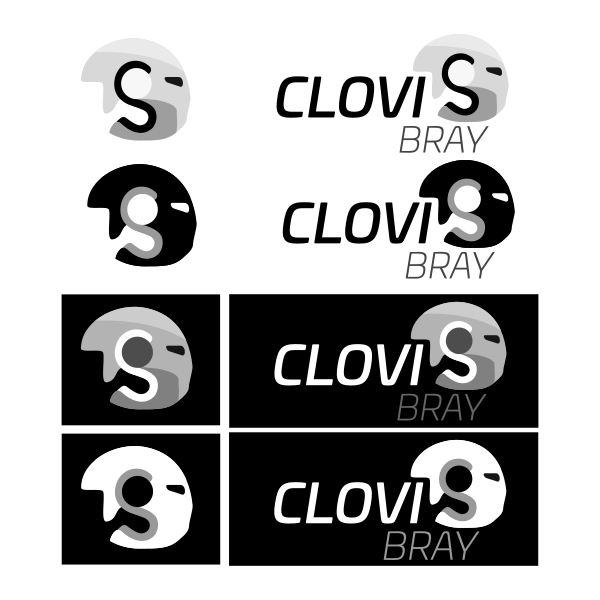

About
An website made for an school project made for an fictional character.
This project is an collaboration between three of the courses we have, english, webb developing and digital creation.
We first wrote an resume and an application letter in our english classes for our chosen characters. And then made logos in the digital creation classes.
We were then tasked with making an website with the application letter in the web developing course.

These are the logos I made